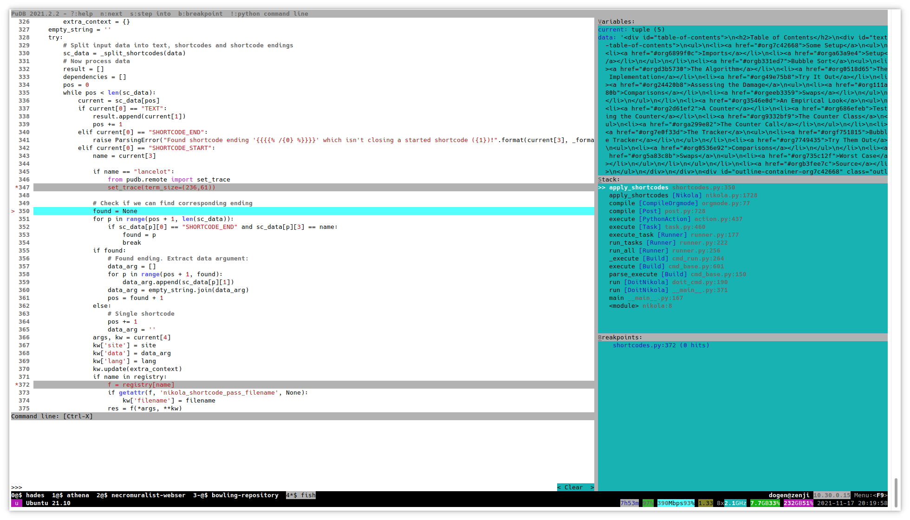

PuDB Remote
Table of Contents
In the Beginning
This is a post on using PuDB via telnet.
Short Version
In case I forgot what to do and just want to read this to remember.
- In the screen where you are going to run telnet, run
tput colsandtput linesto find out the number of columns and lines that the screen is using. - In the code where you want the break, instead of the usual
import pudb; pudb.set_trace()use:
When the code hits the breakpoint it will start up a telnet service and you can log into it from the other screen:
Traceback (most recent call last): File "/home/hades/.local/bin/pygmentize", line 5, inOkay, So Now Why Would You Do This?
I was trying to build one of my sites that uses nikola and this strange error came out saying that one of the shortcodes was getting the "site" argument multiple times. I had no idea what was going on and nikola doesn't pre-define the arguments to the shortcode-plugins (it parses the text and then passes the arguments along using the *args **kwargs convention) which makes it flexible, but figuring out a problem with the arguments is pretty tough, so I decided to turn to my old standby PuDB, which I've been using for so many years now, and is my favorite of the python debuggers I've tried.
I did my usual thing and found the line in the nikola code that was raising the error and inserted a breakpoint further up in the code.
I figured the problem was with my shortcode, named lancelot, and the conditional allowed me to skip all the other shortcodes being used. But then, when I ran the build (nikola build -v2)… disaster.

For some reason it wouldn't use the entire screen, making it impossible (or at least really hard) to read some of the variables that I wanted to check - and even worse, when I tried to open up the ipython terminal in it I got an error message.

The error-message is one of those error-after-the-error messages that you sometimes run into. It was trying to notify me of an error by popping up some kind of dialog but then the dialog wouldn't open so it told me about the dialog error and didn't get around to telling me what the original error was. In any case, something was broken, so I had to resort to desperate measures - I went to read the documentation.
Surprisingly, there actually is some (there wasn't really much when I first started using it).
Dead Ends
The first couple of things I tried seemed promising, but they didn't work.
Another Screen
There wasn't anything about re-sizing the window, but it did mention that you can have the output come out in a different terminal from the one where you run the code, so I gave it a go. I made a different screen and got its file-path using the tty command (/dev/pts/6 in this case). Then I set an environment variable to hold the file-path in the screen where I was running the code (set -x PUDB_TTY /dev/pts/6). This caused PuDB to pipe the output to the next screen - and it did work to send the first PuDB output to the other screen, and it did use the whole window, but then it quit instead of letting me use the debugger. Not quite what I wanted, so I unset the environment variable and moved on.
term_size
The documentation also showed how to use PuDB as a remote debugger, and in the example they passed in the argument term_size to set_trace so I thought, since the functions have the same name, that the set_trace I was using would take the same arguments. So I tried it.
Using the values that I had gotten from tput using tput cols and tput lines. But that just raised an ArgumentError. The functions have the same name, but not the same arguments.
Telnet
So then I decided to try their remote version. It doesn't really make sense to me that it would work better than the regular version, but I didn't see any other choice. So instead of the usual code to insert a breakpoint I used:
Traceback (most recent call last): File "/home/hades/.local/bin/pygmentize", line 5, inWhen I ran the build it stopped and told me to telnet into the localhost address at port 6899.

So I changed into the other screen and ran telnet.
Traceback (most recent call last): File "/home/hades/.local/bin/pygmentize", line 5, inAnd what do you know.

This turns out to not be a complete fix. Hitting ! to get to the ipython terminal froze PuDB, but this was enough for me to inspect the variables and realize that I just needed to move one of the parameters in the definition of my shortcode method and it worked.
But It's Not Fixed?
Well, if this were a more intense debug I really would want the ipython~/~ptipython terminal, but since this is the first time I've tried to run PuDB under KUbuntu's Konsole instead of the GNOME terminal I'm hoping that just switching back to the other terminal will be enough - I'll have to test that once I'm more motivated.